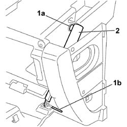
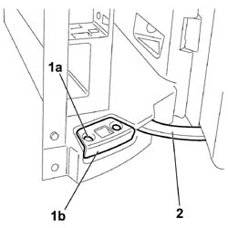
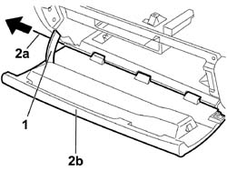

7040A14 FLAP OF GLOVE COMPARTMENT TRIM ELEMENT (ONE) - ARRANGE
- Path
- Procedures > 70 FITTINGS > 7040 BODY INTERIOR FITTINGS AND TRIM > 7040A PASSENGER COMPARTMENT TRIMS > 7040A14 FLAP OF GLOVE COMPARTMENT TRIM ELEMENT (ONE) - ARRANGE
- Kind
- repair procedure (removal / refitting; the operation number is the code)
- Applies to
- all engines; all production periods
- Interactive page
- https://sloeber94.github.io/elrnDB-fCrm/en/#/194001013
Applies to: all engines; all production periods
 Removing
Removing
 Refitting
Refitting- Turn the ignition key to the OFF position and extract it.
- Disconnect the negative and positive battery terminals.
Description | Connector | |
|---|---|---|
BATTERY |
Op. 7040A45 RIGHT DASHBOARD SIDE TRIM - R.R.
Op. 5570T85 CD/AUDIO PLAYER LOADER - R R
Op. 7040A31 DASHBOARD COMPARTMENT ASSEMBLY - R.R.
1. Release the mounting pin (1a) and, using a suitable size drift, release the pin (1b) retaining the shock absorber to the compartment flap.
2. Remove the shock absorber from the compartment.

Applies to: all engines; all production periods
1. Undo the two fixing bolts (1a) and remove the trim (1b) from the compartment.
2. Release the support arm.

Applies to: all engines; all production periods
1. Raise the arm to release the attachment and open the flap completely.
2. Using a suitable size drift, partly release the pin (2a) and extract it and remove the flap (2b) from the compartment.

Applies to: all engines; all production periods
Refitting
Removing- Check that the flap is not damaged.
- Position the flap correctly, inserting the support arm in its housing in the compartment.
- Fit the pin making sure that it does not project at the sides
- Position the shock absorber on the flap and engage the attachment pin.
- Fit the end of the shock absorber in the housing in the flap and, using a suitable tool, fit the retaining pin.
- Position the trim and secure it on both sides using the bolts.
- Check that the flap is working properly.
Op. 7040A31 DASHBOARD COMPARTMENT ASSEMBLY - R.R.
Op. 5570T85 CD/AUDIO PLAYER LOADER - R R
Op. 7040A45 RIGHT DASHBOARD SIDE TRIM - R.R.
- Reconnect the negative and positive battery terminals.
Description | Connector | |
|---|---|---|
BATTERY |
Topics linked from this page (4)
- 5570T85 CD/AUDIO PLAYER LOADER - R R
- 7040A31 DASHBOARD COMPARTMENT ASSEMBLY - R.R.
- 7040A45 RIGHT DASHBOARD SIDE TRIM - R.R.
- A001 BATTERY